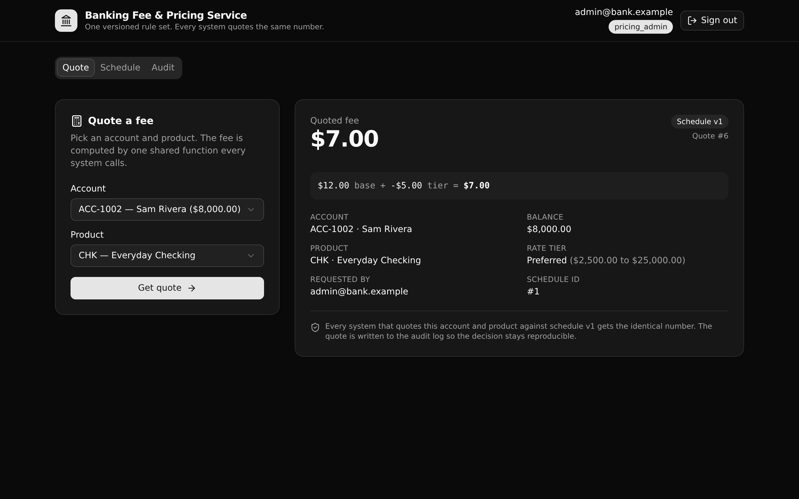

One versioned rule set computes every account fee, so every system quotes the same number and can see the exact schedule version and rate tier behind it.

Most banks copy fee logic into each app that needs it. The copies drift, and no one can say which number is correct. This service moves the rule into one governed calculation a technical reviewer can read and trust.
A versioned fee schedule per product. Exactly one version is active at a time, and publishing a draft retires the old one.
compute_quote resolves the active schedule, selects the balance tier, and computes the fee. The endpoint and the seed routine both call it.
Every quote is logged with the version and tier applied, so a past decision stays correct after a price change.
A pricing_admin can publish and retire schedules. A pricing_viewer can read and quote. Enforced at the endpoint, never row-level security.
All paths are /api:<group>/<name>. Protected endpoints take a bearer token.
| Method | Path | Access | What it enforces |
|---|---|---|---|
| POST | /api:auth/login | public | Email and password to a bearer token. |
| GET | /api:auth/me | any role | The caller's identity and role. |
| POST | /api:pricing/quote | any role | Computes a fee through compute_quote and logs it. Rejects a product with no active schedule. |
| GET | /api:pricing/schedule/{product_id} | any role | The active schedule with its ordered tiers, plus any draft. |
| GET | /api:pricing/quote/{id} | any role | Replays one past quote with the version and tier applied at quote time. |
| GET | /api:pricing/audit | any role | The quote history, filterable by account, product, and date range. |
| POST | /api:pricing/schedule/publish | pricing_admin | Activates a draft and retires the current active version. |
| GET | /api:pricing/lookups | any role | Products and accounts for the UI selectors. |
| GET | /api:seed/run | public | Rebuilds the demo data (idempotent). |
| GET | /api:seed/status | public | Row counts, so the frontend self-seeds a fresh environment. |
Pick an account and product, get the fee with the base and tier breakdown, the rate tier, and the schedule version that produced it.
A product's active schedule and its rate tiers, with version and status badges. An admin sees the draft and a Publish action.
The quote history, filterable by account, product, and date range, showing the same governed number every system received.
Clone it and deploy it to your own Xano account in a minute. Or paste this prompt to a coding agent and let it set up and explain the template for you.
Clone https://github.com/xano-scratch/banking-fee-pricing-service and set it up on my own Xano account. Read the README, run `npm install`, then `npx xanots login` and `npm run xano:deploy`. Then show me how the compute_quote function centralizes the fee rule, and how publishing a draft schedule retires the active one.
Or do it by hand:
git clone https://github.com/xano-scratch/banking-fee-pricing-service cd banking-fee-pricing-service npm install npx xanots login npm run xano:deploy
The deploy prints a live URL. The app seeds itself on first load. Sign in with admin@bank.example / admin-pass-123 (admin) or viewer@bank.example / viewer-pass-123 (viewer).
Any live preview link shared elsewhere is an ephemeral Xano environment and expires. This repo is the durable artifact: re-deploy any time with npm run xano:deploy for fresh links.